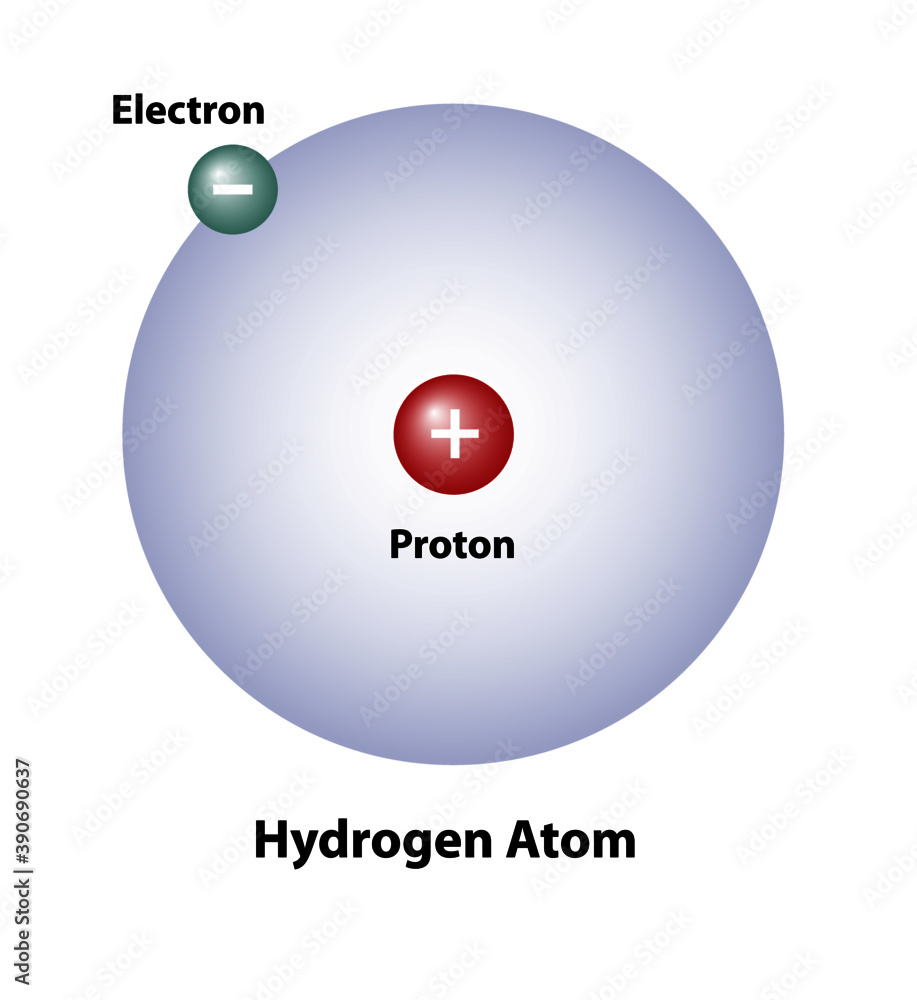

Hydrogen is a chemical element with the symbol H and atomic number 1. It is the lightest and most abundant element in the universe, making up about 75% of its elemental mass.
Hydrogen has various applications, including being used as a fuel, in the production of ammonia for fertilizers, and in the petroleum and chemical industries.
For more detailed information, you can refer to reliable sources such as scientific journals and chemistry textbooks.